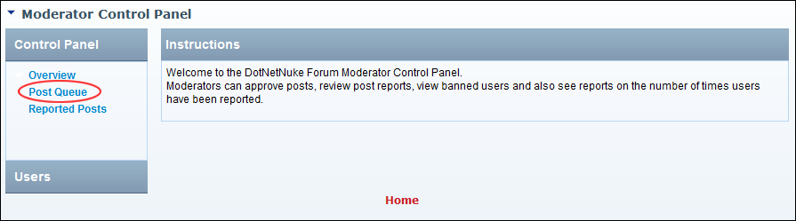

Navigating to the Moderator Post Queue
How to navigate to the location where moderators can view and manage forum posts awaiting moderation.
- Select Moderate from the module actions menu - OR - Click the Moderate link. This opens the Moderator Control Panel.

- In the left-hand panel, select Post Queue. This displays a summary list of forums with posts awaiting approval.
